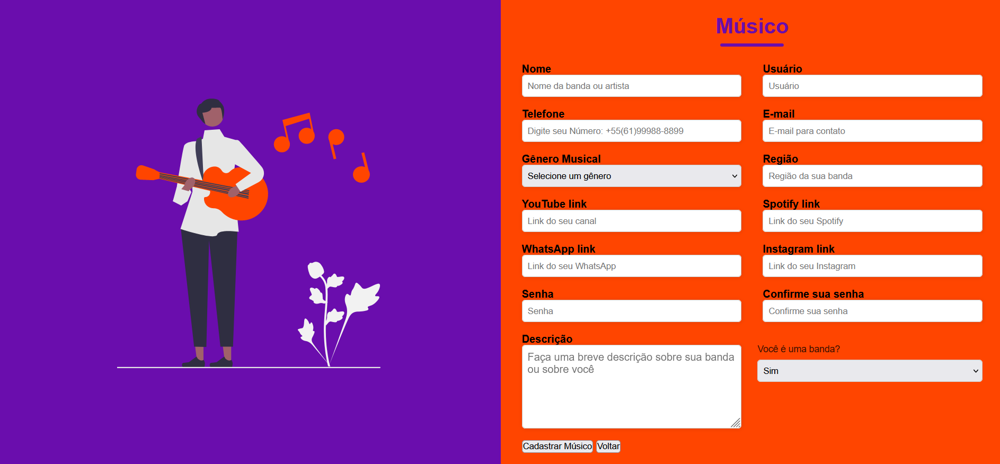
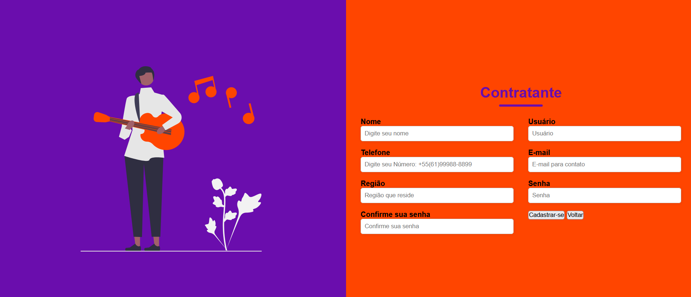
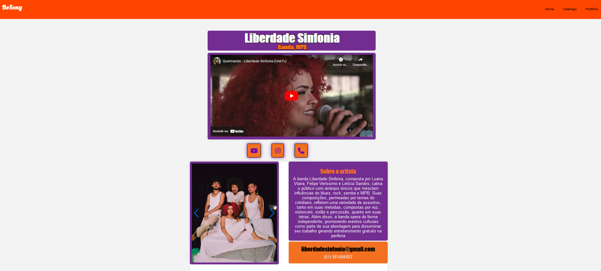
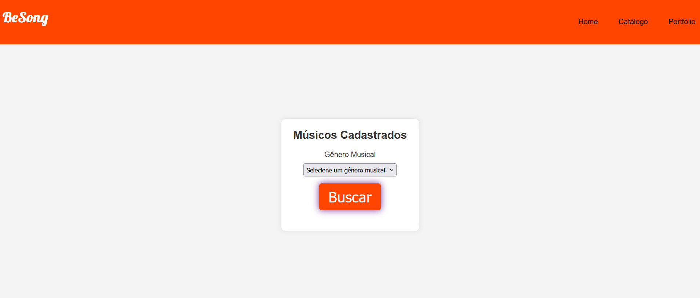

Sumário Executivo
Projeto BeSong
1. Visão Geral do Projeto
O projeto BeSong visa desenvolver uma plataforma web online que conecta artistas do ramo da música com proprietários de restaurantes, bares, casas de shows ou particulares, facilitando a contratação de performances ao vivo. A ideia surgiu da necessidade de solucionar a desconexão entre artistas talentosos que buscam oportunidades de shows e proprietários de estabelecimentos que desejam diversificar suas opções de entretenimento de shows ao vivo.
2. Objetivos do Produto
-
Criar perfis detalhados para os artistas musicais, destacando suas habilidades, gêneros musicais e amostras de seus trabalhos.
-
Desenvolver uma interface intuitiva para que pessoas e empresas explorem os perfis dos artistas e possam contratar performasses.
-
Promover talentos musicais emergentes, oferecendo-lhes uma plataforma para ganhar visibilidade e oportunidades de contratos.
3. Tecnologias Utilizadas
A plataforma será desenvolvida utilizando tecnologias como HTML, CSS e Javascript para o desenvolvimento do Front-end. Utilizará Node.js com apoio do Express no Back-end na qual irá interagir com o MySQL que será utilizado para fazer a gerência do banco de dados do projeto. Para integrar os dados do banco e o back-end foi utilizado o AWS, o que foi uma grande dificuldade de conhecimento tecnológico.
4. Principais funcionalidades
4.1. Cadastro de Usuários
Permitir que músicos e contratantes se registrem na plataforma, criando perfis detalhados.
Figura 01:Página de cadastro do musico/artista

Fonte:BeSong
Figura 02:Página de cadastro do Contratante

Fonte:BeSong
4.2. Perfil do Artista
Perfil com informações sobre gêneros musicais, portfólio, links redirecionando para redes sociais e meios de contato.
Figura 03:Página Portfólio do Artista

Fonte:BeSong
4.3. Busca e Catálogo
Fornecer catálogo de artistas cadastrados e a opção de busca que permite contratantes encontrar artistas com base em critérios específicos (gênero musical, região).
Figura 04:Página de Busca por Artistas

Fonte:BeSong
5. Impacto Esperado
Espera-se que a plataforma BeSong facilite o processo de contratação de músicos para shows ao vivo, proporcionando uma solução que beneficia tanto artistas quanto quem contratar seus serviços. A plataforma visa reduzir as dificuldades na descoberta de talentos, trazendo uma maior visibilidade, mais oportunidades de shows para os artistas, contratantes ter acesso a uma variedade de artistas assim promovendo uma diversidade de performances e eventos ao vivo.
6. Conclusão
O BeSong é um projeto ambicioso que, ao abordar uma necessidade no mercado de entretenimento ao vivo, tem o potencial de facilitar a maneira como músicos e contratantes se conectam e colaboram. Com um planejamento, gestão de projeto e um compromisso com o desenvolvimento, o projeto poderá alcançar seus objetivos e contribuir com uma melhora para a comunidade da indústria dos artistas e contratantes.
| Versão | Data | Descrição da Alteração | Nome(s) Integrante(s) |
|---|---|---|---|
| 1.0 | 15/06/2024 | Escrita do Sumário Executivo | Brenno da Silva |